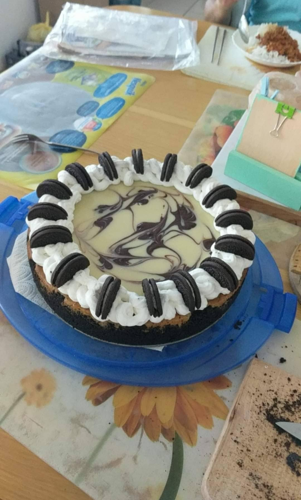
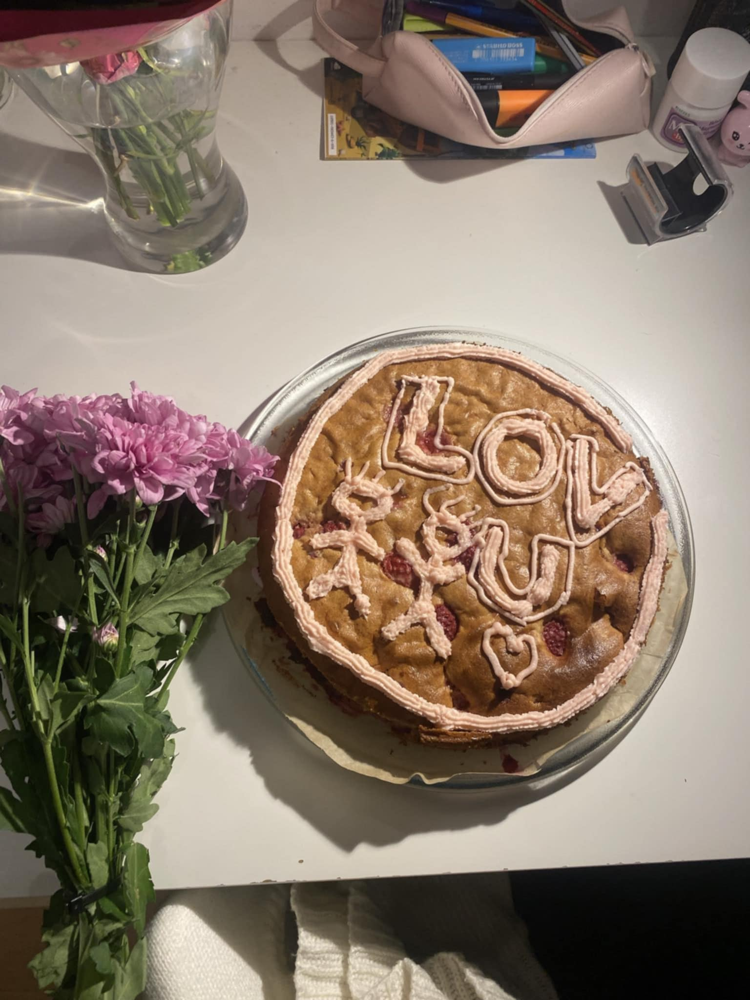

Sikeresen megtaláltad a portfóliómat!
Klimes Imre vagyok másodéves hallgató a BME GPK-n.Itt (ha érdekel mit is tanulok valójában)
Szabadidős tevékenységek
Nem tartom magam a legnagyobb sportembernek, de ha tehetem mindig kimegyek futni, mivel ez a tevékenység az ami legjobban megnyugtat, továbbá nagyon szeretek kertészkedni otthon és nagyon amatőr csillagászattal foglalkozni és nagyon kis mértékben sütni főzni.A sütős karrieremet édesanyámnak köszönhetem mivel nagyon aktív volt a konyhában és kisebb koromban mindig engedte, hogy besegítsek neki ezért lassan önállósodtam ebben a gyermeknek idegen helyen és megismerkedtem a sütés főzés fortélyaival
Ha érdekelnek a legkedveltebb receptjeim, katt ide: IDE vagy ODA
Képzések
Tanulmányok a Gimnáziumban A Nagy Sándor József Gimnáziumban való tanulmányok során kiemelt szerepet játszott a nyelvi képzés, különösen az angol és német nyelvek elsajátítása. A nyelvi tanfolyamok keretein belül nemcsak az alapvető nyelvtani szabályokat és szókincset tanultam meg, hanem a kommunikációs készségeimet is jelentősen fejlesztettem. Az angol nyelv tanulásának különösen nagy jelentősége volt számomra, hiszen a mai globális világban a magabiztos angol nyelvtudás elengedhetetlen. A tanfolyam során elértem a Cambridge C1 nyelvvizsga szintet, amely nemcsak az angol nyelv magas szintű ismeretét igazolja, hanem a nyelv használatára való alkalmasságomat is. Ez a nyelvvizsga lehetővé tette számomra, hogy ne csak elméleti, hanem gyakorlati szinten is alkalmazzam az angolt, hiszen a nyelv használata során különböző szituációkkal találkoztam, beleértve a szakmai kommunikációt is. .
Képek
Egy kis ízelítő a fent említett sütésből és amatőr kertész tevékenykedésemből:
 